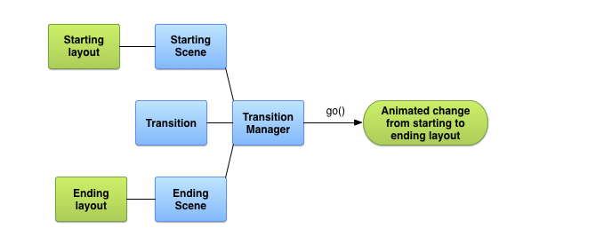
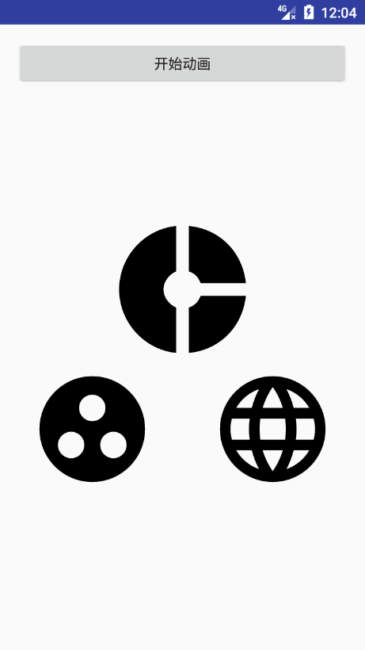
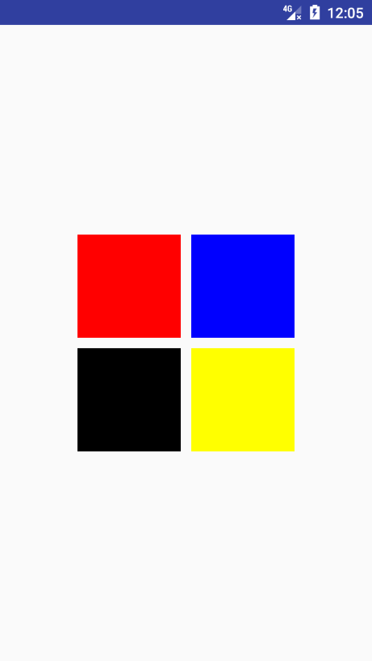
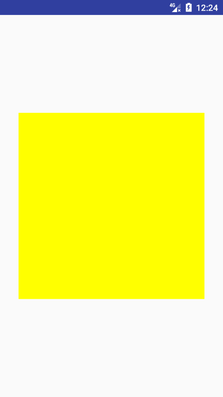

TransitionTransition:意“过渡”，从字面意思上理解，就是从一种状态到另一种状态的切换过程，同样，对于Android中，其实现了UI状态的切换，其中包含了同一个Activity不同UI视图的变换，同时也能够实现不同Activity的切换动画，最出名的可能就是共享元素动画了。
官网提供的原理如下

从流程图上可以看出，有关键类如下：
Scene: 视图状态，定义开始和结束的状态。Transtion: 动画，对于初始状态和结束状态的过渡效果的定义。会遍历对应Scene下的每一个ViewTransitionManager：相应管理器，启动过渡效果。Transition动画首先看一下实现的效果：

根据上面的原理图，我们可以按照如下思路实现效果。
Scene）和结束场景（Scene）。Transition）。TransitionMananger启动相应动画效果。实现代码如下：
首先创建基本的布局文件activity_scene.xml文件
AخA<?xml version="1.0" encoding="utf-8"?><LinearLayout xmlns:android="http://schemas.android.com/apk/res/android" android:layout_width="match_parent" android:layout_height="match_parent" android:orientation="vertical" android:padding="16dp"> <Button android:onClick="begin" android:layout_width="match_parent" android:layout_height="45dp" android:text="开始动画" /> <!--这个View用来做动画的父布局--> <FrameLayout android:id="@+id/rootView" android:layout_width="match_parent" android:layout_height="wrap_content"> <!--初始状态 --> <include layout="@layout/scene1"/> </FrameLayout></LinearLayout>为了便于区分开始与结束状态的场景：将初始状态的场景抽出来为一单一的布局文件。
初始状态与结束状态的布局分别如下：
scene1.xml
<RelativeLayout xmlns:android="http://schemas.android.com/apk/res/android"
android:layout_width="match_parent"
android:layout_height="400dp">
<ImageView
android:id="@+id/image1"
android:layout_width="150dp"
android:layout_height="150dp"
android:layout_centerInParent="true"
android:src="@drawable/image1" />
<ImageView
android:id="@+id/image3"
android:layout_width="150dp"
android:layout_height="150dp"
android:layout_alignParentLeft="true"
android:layout_below="@id/image1"
android:src="@drawable/image3" />
<ImageView
android:id="@+id/image2"
android:layout_width="150dp"
android:layout_height="150dp"
android:layout_alignParentRight="true"
android:layout_below="@id/image1"
android:src="@drawable/image2" />
</RelativeLayout>结束状态场景scene2.xml
xxxxxxxxxx<RelativeLayout xmlns:android="http://schemas.android.com/apk/res/android" android:layout_width="match_parent" android:layout_height="400dp"> <ImageView android:id="@+id/image3" android:layout_width="150dp" android:layout_height="150dp" android:layout_centerInParent="true" android:src="@drawable/image3" /> <ImageView android:id="@+id/image2" android:layout_width="150dp" android:layout_height="150dp" android:layout_alignParentLeft="true" android:layout_below="@id/image3" android:src="@drawable/image2" /> <ImageView android:id="@+id/image1" android:layout_width="150dp" android:layout_height="150dp" android:layout_alignParentRight="true" android:layout_below="@id/image3" android:alpha="20" android:src="@drawable/image1" /></RelativeLayout>通过代码可以看到，不同点在于两次场景的子控件的布局文件不同。把三个ImageView调换了一下位置。
相应的布局文件创建完了，那么如何通过布局文件创建具体的Scene类呢？
由于初始状态已经默认加载到布局中，所以我们只需要关心结束状态的场景即可，使用如下方法
Scene.getSceneForLayout(ViewGroup sceneRoot, int layoutId, Context context)即可通过布局加载场景。
sceneRoot：对应的布局需要加入到那个父控件下layoutId：当前场景的布局id。context: 上下文。场景创建如下
Scene scene2 = Scene.getSceneForLayout(rootView, R.layout.scene2, this);
对于过渡动画效果，Android默认提供了一些基本的实现类
ChangeBounds: 布局位置改变的过渡效果Visibility ： 布局显示隐藏的相关过渡效果。在这里，初始与结束场景只是改变了控件的位置，我们使用ChangeBounds即可。
TransitionManager.go(scene2, new ChangeBounds());
对于上面的变化效果：可能会有如下疑问：
对于Transition,他会比对开始场景与结束场景的不同，遍历场景下的每一个View，如何确定开始与结束场景是同一个View的判断条件如下：
xxxxxxxxxxprivate static final int[] DEFAULT_MATCH_ORDER = { MATCH_NAME, // xml中 transitionName 属性，暂时不管 MATCH_INSTANCE, // 同一个xml实例 MATCH_ID, // 布局id MATCH_ITEM_ID, // ListView ,recycleView 下的itemId };而对于上面的开始与结束场景，我们定义了对应id,所以Transition在比对两次场景下的view时，通过id确定前后场景下的同一个View。
找到了前后场景的相同控件，Transition会记录前后场景下同一View的相对应属性，例如x,y等，然后根据该属性进行相对应的动画。
在通过TransitionManager启动动画时，会将初始场景remove，加载结束场景，并启动动画，因为动画是从初始场景开始的，所以显示出过渡效果。
上面的例子中，是对整个布局的变化进行全局的动画处理，当然可以对某一个单一的控件进行动画操作。
xxxxxxxxxxchangeBounds.addTarget(R.id.image2)addTraget是一个重载的方法，其可以传入如下值：
int targetId: 资源idString targetName: transitionNameClass targetType:View target上面例子中的ChangeBounds是new出来的，同样可以编写xml实现动画。
xxxxxxxxxxTransitionInflater.from(this).inflateTransition(R.transition.fade_transition); xxxxxxxxxx<?xml version="1.0" encoding="utf-8"?><explode xmlns:android="http://schemas.android.com/apk/res/android" android:duration="1000"> <targets> <target android:targetId="@id/img_transition"/> </targets></explode>上面的例子：对于每一次过渡效果，都需要构造对应的场景，稍微麻烦一点。
能不能们监听某一状态，当该状态下的UI产生变化时，自动执行变化效果，例如View的显示隐藏，将自动的执行过渡效果。
xxxxxxxxxxTransitionManager.beginDelayedTransition(final ViewGroup sceneRoot, Transition transition)该方法将监听sceneRoot下的控件，当有变化时，将会执行对象的效果。
实现下面这个例子来了解beginDelayedTransition的使用：

首先看一下布局文件activity_transition_example.xml
xxxxxxxxxx<?xml version="1.0" encoding="utf-8"?><RelativeLayout xmlns:android="http://schemas.android.com/apk/res/android" android:layout_width="match_parent" android:layout_height="match_parent" android:orientation="vertical"> <GridLayout android:id="@+id/root_view" android:layout_width="wrap_content" android:layout_height="wrap_content" android:layout_centerInParent="true" android:columnCount="2"> <View android:id="@+id/red_box" android:layout_width="100dp" android:layout_height="100dp" android:background="#f00" /> <View android:id="@+id/blue_box" android:layout_width="100dp" android:layout_height="100dp" android:layout_marginLeft="10dp" android:background="#00f" /> <View android:id="@+id/black_box" android:layout_width="100dp" android:layout_height="100dp" android:layout_marginTop="10dp" android:background="#000" /> <View android:id="@+id/yellow_box" android:layout_width="100dp" android:layout_height="100dp" android:layout_marginLeft="10dp" android:layout_marginTop="10dp" android:background="#ff0" /> </GridLayout></RelativeLayout>定义了一个四个不同的颜色的方块，将通过改变visable属性，构造不同的场景。
看一下具体的代码实现，关键便是在点击效果的监听实现方法
xxxxxxxxxx @Override public void onClick(View v) { // 启动延时动画 TransitionManager.beginDelayedTransition(mRootView, new Explode()); // 切换控件的状态 toggleVisibility(mRedBoxView, mBlueBoxView, mBlackBoxView, mYellowBoxView); }注释很明白，唯一的疑惑可能就是 Explode，首先可以确定他是Explode的实现类。
在前面提到过Transition的其中一个子类Visibility，该类主要监听控件的显示和隐藏并做对应的动画，而Explode便是该类的其中一个子类，实现了类似爆炸效果的显示隐藏。还有两个子类分别是Fade和Slide。
Transition根据上面的例子，可以简单的理解，Transition就是监听控件的某一属性，并根据该属性的变化形成过渡动画。那么看下面的例子：

该过渡效果，主要监听颜色的变化根据颜色的变化生成过渡效果。
创建类ColorChangeTransition，继承Transition，并实现两个抽象方法：
x public static class ColorChangeTransition extends Transition { // key private static final String PROPNAME_BACKGROUND = "colorchangetransition:change_color:background"; @Override public void captureStartValues(TransitionValues transitionValues) { // 开始场景的回调，计算初始状态 if (transitionValues.view.getBackground() instanceof ColorDrawable) { // 计算颜色的值 captureValues(transitionValues); } } // 获取色值，并保存 private void captureValues(TransitionValues values) { View view = values.view; // 保存对应的状态 values.values.put(PROPNAME_BACKGROUND, ((ColorDrawable) values.view.getBackground()).getColor()); } @Override public void captureEndValues(TransitionValues transitionValues) { // 结束场景的回调，计算结束状态 if (transitionValues.view.getBackground() instanceof ColorDrawable) { captureValues(transitionValues); } } @Override public String[] getTransitionProperties() { // 返回我们自定义的属性key return new String[]{ PROPNAME_BACKGROUND }; }}因为我们实现的是背景颜色变换的过渡效果，所以我们只关注背景的变换。
继承Transition方法会实现两个抽象方法
captureStartValues: 开始场景状态的回调captureEndValues : 结束场景状态的回调根据之前的原理分析，我们只需要在两个回调中获取我们相应的值幷保存即可。因为开始与结束保存的值的方式都相同，所以统一方法处理。
同时，我们还需要重载一个方法，实现动画的创建。
xxxxxxxxxx @Override public Animator createAnimator(ViewGroup sceneRoot, TransitionValues startValues, TransitionValues endValues) { // 在开始与结束场景都存在的时 if (null == startValues || null == endValues) { return null; } // 动画的目标view final View view = endValues.view; // 初始状态和结束状态 int startBackground = (Integer) startValues.values.get(PROPNAME_BACKGROUND); int endBackground = (Integer) endValues.values.get(PROPNAME_BACKGROUND); if (startBackground != endBackground) { // 创建动画 ValueAnimator animator = ValueAnimator.ofObject(new ArgbEvaluator(), startBackground, endBackground); animator.setDuration(500); animator.addUpdateListener(new ValueAnimator.AnimatorUpdateListener() { @Override public void onAnimationUpdate(ValueAnimator animation) { Object value = animation.getAnimatedValue(); if (null != value) { view.setBackgroundColor((Integer) value); } } }); return animator; } return null; }基于上，即可实现。
总结：
Transition,并实现抽象方法。